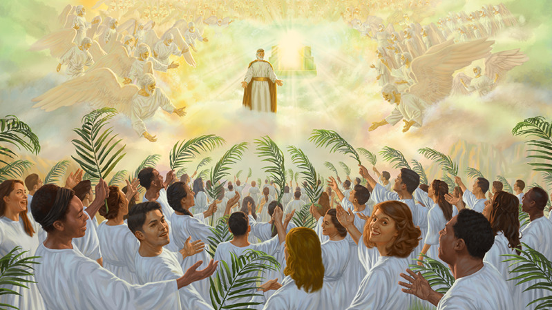

“Desterremos los mitos del Día del Juicio”
Analice qué no es el Día de Juicio (it-1 681; bh 213 párrs. 1-3).
(Apocalipsis 20:11, 12)
11 Vi un gran trono blanco y al que estaba sentado en él. La tierra y el cielo huyeron de su presencia y no se les volvió a ver. 12 Y vi a los muertos —los grandes y los pequeños— de pie delante del trono, y se abrieron rollos. Pero se abrió otro rollo: el rollo de la vida. Y, de acuerdo con lo que estaba escrito en los rollos, se juzgó a los muertos por sus acciones.
los muertos de pie delante del trono

Ante el trono[la imagen 1]
de acuerdo con lo que estaba escrito en los rollos, se juzgó a los muertos por sus acciones
(Romanos 6:7) Porque el que muere queda absuelto de su pecado.
Analice qué es el Día de Juicio (it-1 681; bh 213 párrs. 1-3).
“Día” o período específico [en este caso 1,000 años] en el que [los que sobreviven Armageddón y los resusitados aquí en la Tierra] son llamados para rendir cuentas ante Dios. El Día de Juicio suministrará la oportunidad para que reciban vida eterna.
Hch 17:30, 31;
Es cierto, Dios ha pasado por alto esos tiempos de ignorancia, pero ahora les está diciendo a todos en todas partes que se arrepientan. 31 Porque ha fijado un día en el que se propone juzgar a la tierra habitada con justicia mediante un hombre nombrado por él. Y les ha dado una garantía a todos los hombres al resucitarlo de entre los muertos”.
Ante el trono[la imagen 2]
(Apocalipsis 21:3, 4) Luego oí una voz fuerte que salía del trono y decía: “¡Mira! La tienda de Dios está con la humanidad. Él residirá con ellos y ellos serán su pueblo. Dios mismo estará con ellos. 4 Y les secará toda lágrima de sus ojos, y la muerte ya no existirá, ni habrá más tristeza ni llanto ni dolor. Las cosas anteriores han desaparecido”.